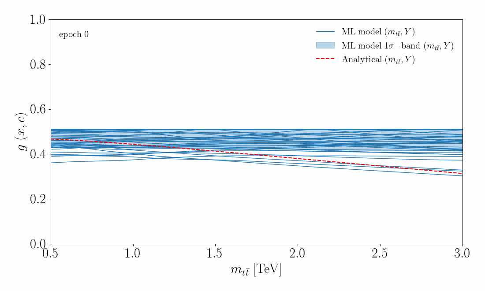
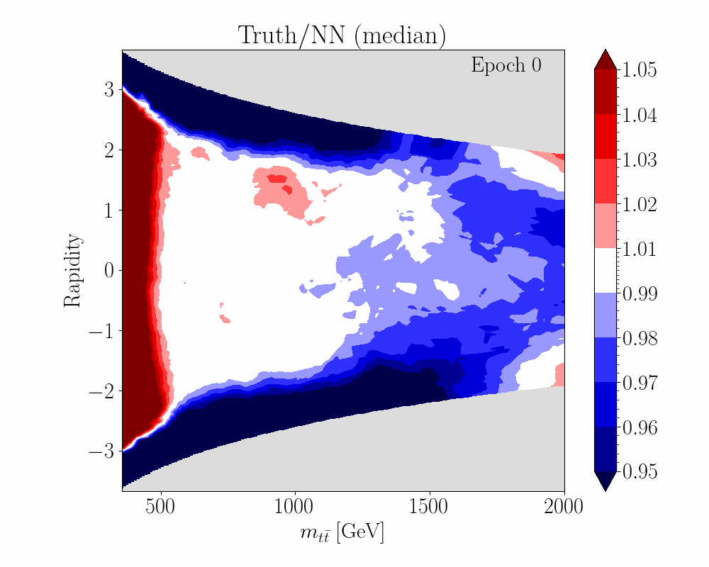

ml4eft.analyse.animate.Animate
ml4eft.analyse.animate.Animate#
- class ml4eft.analyse.animate.Animate(c, frames)[source]#
Bases:
objectPost-training animator that animates the evolution of models during training
Methods
__init__(c, frames)Animate constructor
make_animation_1d(analyser, df)Returns a 1-dimensional animation of the EFT ratio functions, comparing the analytical result and the ML model
make_animation_2d(analyser, df, c_name, ...)Returns a 2-dimensional animation of the EFT ratio functions, comparing the analytical result and the ML model
- make_animation_1d(analyser, df)[source]#
Returns a 1-dimensional animation of the EFT ratio functions, comparing the analytical result and the ML model
- Parameters
analyser (
ml4eft.analyse.analyse.Analyse) – Analyser objectdf (pandas.DataFrame) – phase space 1-d grid stored as a DataFrame
- Returns
anim – matplotlib.animation.FuncAnimation object
- Return type
Examples
>>> anim = Animate(c={'ctgre': 2, 'cut': 0}, frames=200) >>> anim_tt = anim.make_animation_1d(analyser, df) >>> anim_tt
- make_animation_2d(analyser, df, c_name, order, process, shape)[source]#
Returns a 2-dimensional animation of the EFT ratio functions, comparing the analytical result and the ML model
- Parameters
analyser (
ml4eft.analyse.analyse.Analyse) – Analyser objectdf (pandas.DataFrame) – phase space grid stored as a DataFrame
c_name (str) – Name of EFT coefficient
order (str) – Order of the EFT expansion, choose between ‘lin’ and ‘quad’
process (str) – Supported options are ‘tt’ or ‘ZH’
shape (array_like) – dimension of phase space grid passed as tuple
- Returns
anim – matplotlib.animation.FuncAnimation object
- Return type
Examples
>>> import ml4eft.preproc.constants as constants >>> mt = constants.mt
We create a grid in the \((m_{tt}, Y)\) phase-space
>>> s = 14 ** 2 >>> epsilon = 1e-2 >>> mtt_min, mtt_max = 0.5, 2 >>> y_min, y_max = - np.log(np.sqrt(s) / mtt_min), np.log(np.sqrt(s) / mtt_min)
>>> x_spacing, y_spacing = 1e-2, 0.01 >>> mtt_span = np.arange(mtt_min, mtt_max, x_spacing) >>> y_span = np.arange(y_min, y_max, y_spacing)
>>> mtt_grid, y_grid = np.meshgrid(mtt_span, y_span) >>> grid = np.c_[y_grid.ravel(), mtt_grid.ravel()]
Convert the numpy grid to a DataFrame
>>> df = pd.DataFrame(grid, columns=['y', 'm_tt'])
Create an Animate object and start the animation
>>> anim = Animate(c={'ctgre': 2, 'cut': 0}, frames=200)
>>> anim_tt = anim.make_animation_2d(analyser, df, 'ctgre_ctgre', 'quad', 'tt', mtt_grid.shape) >>> anim_tt